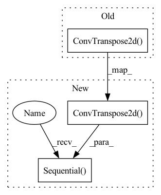

Pattern ID :2123

Before Change
("block2", self._block(features_g * 16, features_g * 8, 4, 2, 1)), // img: 8x8
("block3", self._block(features_g * 8, features_g * 4, 4, 2, 1)), // img: 16x16
("block4", self._block(features_g * 4, features_g * 2, 4, 2, 1)), // img: 32x32
("transpose_conv_out", nn.ConvTranspose2d(
features_g * 2, channels_img, kernel_size=4,
stride=2, padding=1, bias=False)),
// Output: N x channels_img x 64 x 64
("tanh", nn.Tanh()),
]))
After Change
full_list = [
// Input: N x channels_noise x 1 x 1
*block_list,
("transpose_conv_out", nn.ConvTranspose2d(
features_g * 2, channels_img, kernel_size=4,
stride=2, padding=1, bias=False)),
// Output: N x channels_img x img_size x img_size
("tanh", nn.Tanh()),
]
self.net = nn.Sequential(OrderedDict(full_list))
def _block(self, in_channels, out_channels, kernel_size, stride, padding):
return nn.Sequential(OrderedDict([
("transpose_conv", nn.ConvTranspose2d(
In pattern: SUPERPATTERN
Frequency: 4
Non-data size: 3
Instances
Fragment ID: 4997036
Project Name: ebartrum/lightning_gan_zoo
Commit Name: 33cb57daa95823255bd830c1a9686d2515df75af
Time: 2021-04-22
Author: edward.bartrum@gmail.com
File Name: core/models/standard_networks.py
M Class Name: Generator
N Class Name: Generator
M Method Name: __init__(5)
N Method Name: __init__(4)
M Parent Class: nn.Module
N Parent Class: nn.Module
M File Name: core/models/standard_networks.py
N File Name: core/models/standard_networks.py
M Start Line: 58
M End Line: 69
N Start Line: 56
N End Line: 75
'>
Before Change
for _, (enc_dim_in, enc_dim_out), (dec_dim_in, dec_dim_out) in zip(range(num_layers), enc_dim_pairs, dec_dim_pairs):
self.encoders.append(nn.Conv2d(enc_dim_in, enc_dim_out, 4, stride = 2, padding = 1))
self.decoders.append(nn.ConvTranspose2d(dec_dim_in, dec_dim_out, 4, stride = 2, padding = 1))
self.encoders.insert(0, nn.Conv2d(channels, dim, 3, padding = 1))
self.decoders.append(nn.Conv2d(dim, channels, 1))
After Change
for _, (enc_dim_in, enc_dim_out), (dec_dim_in, dec_dim_out) in zip(range(num_layers), enc_dim_pairs, dec_dim_pairs):
self.encoders.append(nn.Sequential(nn.Conv2d(enc_dim_in, enc_dim_out, 4, stride = 2, padding = 1), nn.ReLU()))
self.decoders.append(nn.Sequential(nn.ConvTranspose2d(dec_dim_in, dec_dim_out, 4, stride = 2, padding = 1), nn.ReLU()))
for _ in range(num_resnet_blocks):
self.encoders.append(ResBlock(dims[-1]))
'>
Fragment ID: 4997039
Project Name: lucidrains/nuwa-pytorch
Commit Name: 28bf44c997e77e420c9f1e6dfb810691f7766e9a
Time: 2022-01-04
Author: lucidrains@gmail.com
File Name: nuwa_pytorch/nuwa_pytorch.py
M Class Name: VQGanVAE
N Class Name: VQGanVAE
M Method Name: __init__(1)
N Method Name: __init__(1)
M Parent Class: nn.Module
N Parent Class: nn.Module
M File Name: nuwa_pytorch/nuwa_pytorch.py
N File Name: nuwa_pytorch/nuwa_pytorch.py
M Start Line: 177
M End Line: 178
N Start Line: 183
N End Line: 199
'>
Before Change
self._block(features_g * 16, features_g * 8, 4, 2, 1), // img: 8x8
self._block(features_g * 8, features_g * 4, 4, 2, 1), // img: 16x16
self._block(features_g * 4, features_g * 2, 4, 2, 1), // img: 32x32
nn.ConvTranspose2d(
features_g * 2, channels_img, kernel_size=4, stride=2, padding=1
),
// Output: N x channels_img x 64 x 64
nn.Tanh(),
)
After Change
class Generator(nn.Module):
def __init__(self, channels_noise, channels_img, features_g):
super(Generator, self).__init__()
self.net = nn.Sequential(OrderedDict([
// Input: N x channels_noise x 1 x 1
("block1", self._block(channels_noise, features_g * 16, 4, 1, 0)), // img: 4x4
("block2", self._block(features_g * 16, features_g * 8, 4, 2, 1)), // img: 8x8
("block3", self._block(features_g * 8, features_g * 4, 4, 2, 1)), // img: 16x16
("block4", self._block(features_g * 4, features_g * 2, 4, 2, 1)), // img: 32x32
("transpose_conv_out", nn.ConvTranspose2d(
features_g * 2, channels_img, kernel_size=4,
stride=2, padding=1)),
// Output: N x channels_img x 64 x 64
("tanh", nn.Tanh()),
]))
def _block(self, in_channels, out_channels, kernel_size, stride, padding):
return nn.Sequential(
nn.ConvTranspose2d(
'>
Fragment ID: 4997034
Project Name: ebartrum/lightning_gan_zoo
Commit Name: 1d681697b401ba1e5d909535f57653d61b848928
Time: 2021-01-15
Author: edward.bartrum@gmail.com
File Name: core/networks.py
M Class Name: Generator
N Class Name: Generator
M Method Name: __init__(4)
N Method Name: __init__(4)
M Parent Class: nn.Module
N Parent Class: nn.Module
M File Name: core/networks.py
N File Name: core/networks.py
M Start Line: 46
M End Line: 57
N Start Line: 46
N End Line: 57
'>
Before Change
self.linear = nn.Linear(nz+label_width, 4 * 4 * ngf * 8) /ǚ*4*512
self.main = nn.Sequential(
// state size: 4 x 4
nn.ConvTranspose2d(ngf * 8, ngf * 8, kernel_size=4, stride=2, padding=1, bias=bias), //h=2h
nn.BatchNorm2d(ngf * 8),
nn.ReLU(True),
// state size. 8 x 8
After Change
////// add label to the first conv
self.linear = nn.Linear(nz, 4 * 4 * ngf * 8) /ǚ*4*512
self.conv1 = nn.Sequential(
// state size: 4 x 4
nn.ConvTranspose2d(ngf * 8, ngf * 8, kernel_size=4, stride=2, padding=1, bias=bias), //h=2h
nn.BatchNorm2d(ngf * 8),
nn.ReLU(True),
// state size. 8 x 8
)
self.conv2 = nn.Sequential(
nn.ConvTranspose2d(ngf * 8, ngf * 4, kernel_size=4, stride=2, padding=1, bias=bias), //h=2h
nn.BatchNorm2d(ngf * 4),
nn.ReLU(True),
'>
Fragment ID: 4997040
Project Name: ubcdingxin/improved_ccgan
Commit Name: ce56ae651818a19364032ed868adaa4ef3ca4754
Time: 2020-03-04
Author: dingx92@gmail.com
File Name: CellCounting/models/cond_cnn_generator_discriminator.py
M Class Name: cond_cnn_generator
N Class Name: cond_cnn_generator
M Method Name: __init__(8)
N Method Name: __init__(8)
M Parent Class: nn.Module
N Parent Class: nn.Module
M File Name: CellCounting/models/cond_cnn_generator_discriminator.py
N File Name: CellCounting/models/cond_cnn_generator_discriminator.py
M Start Line: 29
M End Line: 51
N Start Line: 55
N End Line: 79